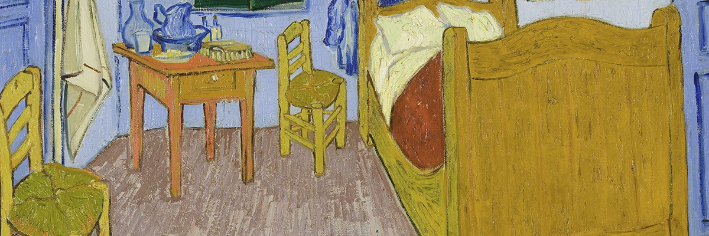

The Bedroom
While he was in Arles, Van Gogh made this painting of his bedroom in the Yellow House. He prepared the room himself with simple furniture and with his own work on the wall. The bright colours were meant to express absolute ‘repose’ or ‘sleep’. Research shows that the strongly contrasting colours we see in the work today are the result of discolouration over the years. The walls and doors, for instance, were originally purple rather than blue. The apparently odd angle of the rear wall, meanwhile, is not a mistake on Van Gogh’s part – the corner really was skewed. The rules of perspective seem not to have been accurately applied throughout the painting, but this was a deliberate choice. Vincent told Theo in a letter that he had deliberately ‘flattened’ the interior and left out the shadows so that his picture would resemble a Japanese print. Van Gogh was very pleased with the painting: ‘When I saw my canvases again after my illness, what seemed to me the best was the bedroom.